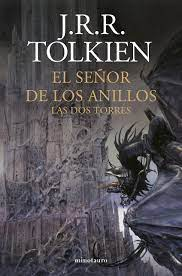

El Señor de los Anillos: Las dos torres
- Género: Novela - Fantasía Heróica
- Autor: J. R. R. Tolkien
- Fecha de publicación: 1954
- Páginas: 352
Es el segundo libro de la saga del Señor de los Anillos, continúa la historia de La Comunidad del Anillo
Mi género de lectura favorito es la fantasía y mi autor favorito es Brandon Sanderson. Estos son algunos de los libros que he leído últimamente
Es el segundo libro de la saga del Señor de los Anillos, continúa la historia de La Comunidad del Anillo
Es el primer libro de la saga del Señor de los Anillos, secuela de El hobbit. Narra las aventuras de Frodo Bolsón, un hobbit de la Tierra Media
Es el cuarto libro del Archivo de las Tormetas, continúa la hisotia de los tres primeros libros.
Es una historia que forma parte del Archivo de las Tormetas, sus sucesos tienen lugar entre el tercer y cuarto libro. Narra las aventuras de un personaje secundario, Rysn y su mascota, que ha enfermado misteriosamente.